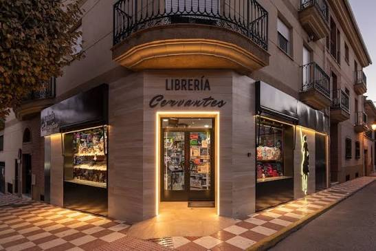
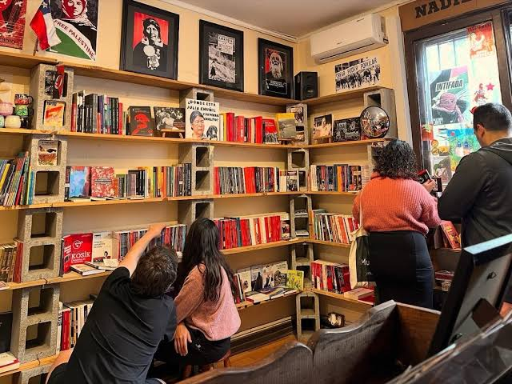

🕵️♂️
Daniel Duarte
Historiador de TextosHistoriador y paleógrafo. Se encarga de rastrear ediciones raras de clásicos y tratados estoicos por los rincones más antiguos del mundo digital.
Detrás de cada libro seleccionado, cada sello colocado a mano y cada recomendación literaria, existe un gremio de apasionados por la tinta antigua. No solo nos dedicamos a comerciar libros; somos un equipo especializado y te recomendamos las mejore obras literarias. Nuestro equipo está compuesto por archivistas, investigadores y amantes de las grandes epopeyas dedicados por entero a guiarte en tu viaje a a travez de grandes obras.
Historiador y paleógrafo. Se encarga de rastrear ediciones raras de clásicos y tratados estoicos por los rincones más antiguos del mundo digital.
Especialista en literatura clásica y romance trágico. Su misión es la curaduría del catálogo, asegurando que cada sinopsis rinda honor al alma del autor.
El encargado de que tu libro viaje protegido. Custodia el arte del empaque rústico, asegurando que cada pagina y empaque lleguen impecables.
Entre muros de piedra, estanterías de roble y el aroma de viejos libros, nuestro local físico es un refugio para los buscadores de grandes historias.



Resolviendo las dudas de los navegantes y buscadores de historias en El Faro.
Nuestras instalaciones principales y el Gran Salón de Lectura se encuentran en el casco histórico de Asunción, Paraguay. Un refugio de piedra y madera abierto a todos los amantes de las buenas crónicas.
Aceptamos pagos en efectivo en nuestro local, transferencias bancarias y todas las tarjetas de crédito o débito del territorio nacional. Todos los valores están fijados firmemente en Guaraníes (G).
Realizamos despachos y envíos protegidos a todos los departamentos del país a través de nuestras encomiendas aliadas. Por supuesto, también puedes optar por retirar tus pergaminos directamente en nuestros anaqueles físicos.
Sí, cada corona o monto expresado en Guaraníes (G) en nuestro catálogo web ya incluye el Impuesto al Valor Agregado (IVA) legal correspondiente, sin sorpresas al momento del cobro.
El catálogo digital muestra nuestras obras más solicitadas, pero en nuestros depósitos físicos custodiamos tomos antiguos, ediciones raras y descatalogadas. No dudes en consultarnos por ese título especial que buscas.
Puedes comunicarte directamente con nuestro gremio a través de los canales de contacto. Nuestro historiador de textos iniciará un rastreo digital y físico para intentar conseguir el ejemplar para ti.
Para los envíos en la capital, los tomos llegan a tu destino en un plazo de 24 a 48 horas hábiles. Para el interior del país, el viaje del mensajero toma entre 3 a 5 días laborables.
Absolutamente. Si un libro sufre percances durante el viaje o presenta fallas de impresión graves que nublen tu lectura, dispones de 7 días para reportarlo y procederemos al cambio bajo sello de garantía.
Sí, nuestro "Rincón del Investigador" está habilitado para lecturas silenciosas. Además, cada mes el gremio se reúne en el Gran Salón para debatir sobre las obras clásicas y filosóficas más influyentes.
Cada obra es envuelta individualmente en materiales que repelen la humedad y resguardada en empaques rústicos rígidos de alta resistencia para asegurar que sus hojas y cubiertas lleguen completamente impecables.
¡Por supuesto! Para los grandes lanzamientos literarios o importaciones especiales, habilitamos un sistema de preventa y reservas para asegurar que tu ejemplar quede apartado bajo tu nombre en el inventario.
A las órdenes de estudio y lectores empedernidos les ofrecemos consideraciones especiales en compras de grandes lotes. Consúltanos directamente para conocer nuestros planes de apoyo cultural.